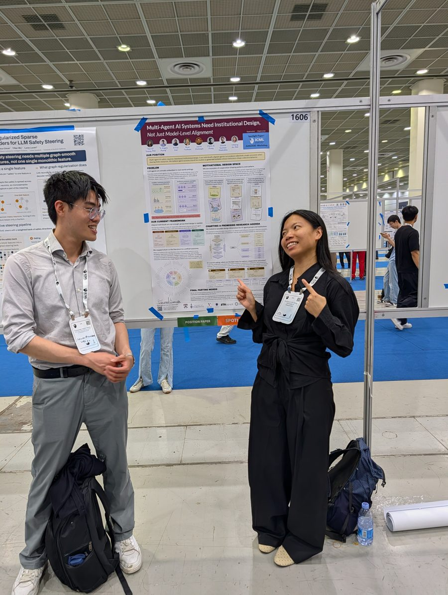
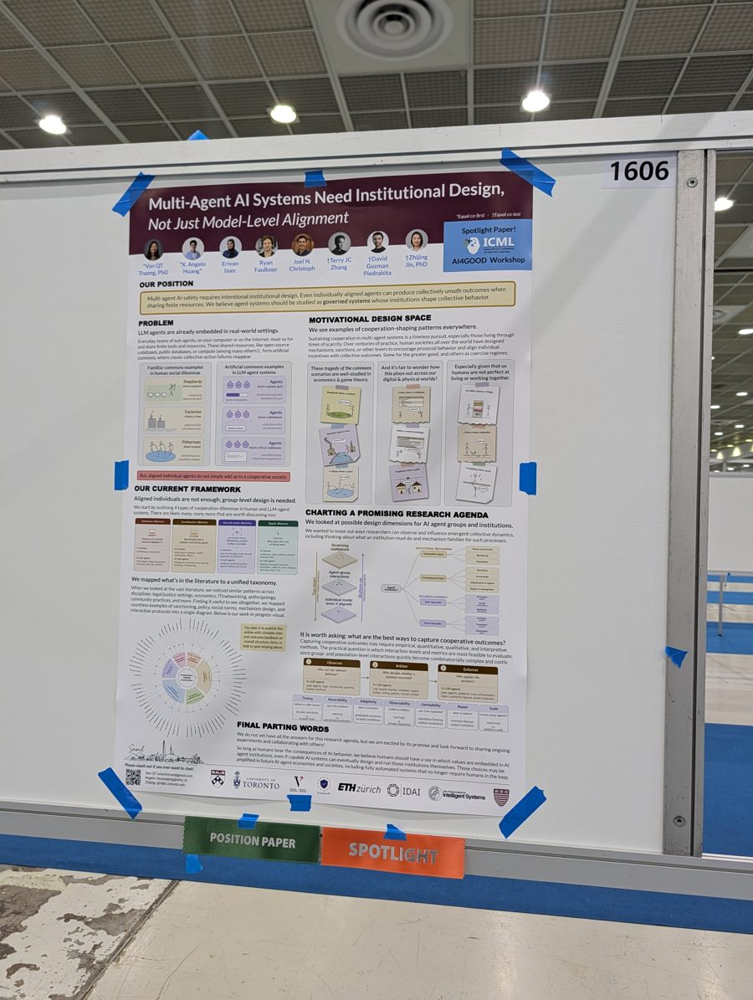
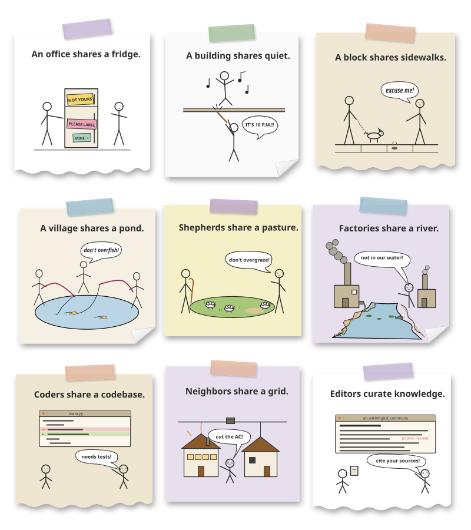

From internet friends to beloved collaborators
Seoul, July 2026
An early version of this work, Multi-Agent AI Systems Need Institutional Design, Not Just Model-Level Alignment, was presented at ICML 2026 in Seoul, South Korea, as a spotlight at the Trustworthy AI for Good Workshop and at the Culture × AI: Evaluating AI as a Cultural Technology Workshop. Thank you to everyone who stopped by to chat with us and for warmly sharing your feedback and ideas.


Our position
Problem
LLM agents are already embedded in real-world settings.
Every day, teams of sub-agents—on your computer or on the Internet—must vie for and share finite tools and resources. Shared codebases, public databases, and compute form artificial commons, where classic collective-action failures can reappear.
Aligned individual agents do not simply add up to a cooperative society.
From an individual model to a society of institutions
Model-level evaluation examines only the center.
After Bronfenbrenner's nested systems: an individual model acts inside settings, links between settings, and the platform, market, and legal institutions that govern it from outside. Influence runs both ways, and every layer changes over time.
The agent in its institutional context
Institutions can be designed or can emerge. For AI agents today, design must lead.
Individual models sit inside agent–group interactions, which sit inside governing institutions. The rings beside each layer match the nested systems above.
Motivational design space
We see cooperation-shaping patterns everywhere.
Human communities have spent centuries trying warnings, sanctions, norms, appeals, repair, and other ways of living with shared resources. Some serve the greater good; others become coercive regimes.

Our current framework
Aligned individuals are not enough; group-level design is needed.
We start with four cooperation dilemmas that recur wherever resources are shared, plus two that go beyond that framing: coordination and collusion. There are likely many, many more worth discussing too!
The design space of agent institutions
Functions say what an institution must do; mechanism families say how it acts on agents.
Seven institutional functions, three that make behavior expected and visible and four that respond to it, and six mechanism families, three that change the game agents play and three that shape interaction over time.
We mapped what’s in the literature to a unified taxonomy.
We thematically coded 645 documented uses of cooperation-shaping mechanisms, from lab experiments and legal rules to peer-to-peer protocols and LLM-agent studies. 549 of them act through one of 66 mechanisms in 18 themes, grouped by the six mechanism families of the paper; the rest describe group-level phenomena or fall outside the scope. Choose any mechanism to see its definition and the sources behind it.
How the counts add up. 256 instances from 185 multi-agent studies (one per mechanism a study tests) + 321 from other fields and systems + 68 seed examples = 645. Of these, 440 single mechanisms + 109 named combinations = 549 appear in the map; the other 82 describe group-level phenomena and 14 fall outside the scope.
Loading the taxonomy…
Text list of all mechanisms
Mechanisms are what we design. Phenomena are what emerges.
Alongside the mechanisms above, we thematically coded 82 group-level phenomena—patterns that arise from interaction rather than levers a designer applies. The emphasis has shifted with the technology: multi-agent reinforcement learning mostly documented emergent communication, while LLM-agent studies increasingly report emergent society—conventions, social structure, culture—and failure modes. Most are neutral or surprising, but 20 are already harmful, almost all in LLM systems and with no institution present.
Click any row to open the papers behind it and, where they exist, the real-world incidents.
When cooperation mechanisms fail
Adding a mechanism does not reliably add cooperation.
Three ways a mechanism can backfire, each at the enforcement stage where it breaks: the observer, the arbiter, or the enforcer. Each column runs from the mechanism to what to measure and the safeguards that address it, then loops back to revise and retest.
From a rule change to group outcomes
Every arrow is a place where an institution can fail.
A Coleman boat, after Coleman (1990) and Martínez-Peña and Ylikoski (2024): a change to the rules reaches each agent's situation, shapes what the model does, and only then adds up to outcomes for the group. Designers often hope for the dashed shortcut.
Charting a promising research agenda
It is worth asking: what are the best ways to capture cooperative outcomes?
Capturing cooperation may require empirical, quantitative, qualitative, and interpretive methods. The practical question is which interaction levels and metrics are feasible to evaluate as group- and population-level dynamics become more complex.
Final parting words
So long as humans bear the consequences of AI behavior, we believe humans should have a say in which values are embedded in AI agent institutions.
Even if capable AI systems eventually design and run those institutions themselves, today’s choices may be amplified in future AI agent economies and societies.